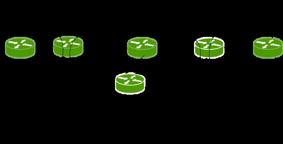
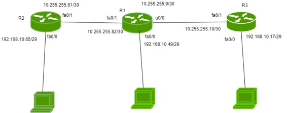

Prerequisite – Open shortest path first (OSPF)
Open shortest path first (OSPF) is a link-state routing protocol which is used to find the best path between the source and the destination router using its own SPF algorithm.
Open shortest path first (OSPF) router roles –
An area is a group of contiguous network and routers. Routers belonging to same area shares a common topology table and area I’d. The area I’d is associated with router’s interface as a router can belong to more than one area. There are some roles of router in OSPF:

- Backbone router – The area 0 is known as backbone area and the routers in area 0 are known as backbone routers. If the routers exists partially in the area 0then also it is a backbone router.
- Internal router – An internal router is a router which have all of its interfaces in a single area.
- Area Boundary Router (ABR) – The router which connects backbone area with another area is called Area Boundary Router. It belongs to more than one area. The ABRs therefore maintain multiple link-state databases that describe both the backbone topology and the topology of the other areas.
- 4.Area Summary Border Router (ASBR) – When an OSPF router is connected to a different protocol like EIGRP, or Border Gateway Protocol, or any other routing protocol then it is known as AS. The router which connects two different AS (in which one of the interface is operating OSPF) is known as Area Summary Border Router. These routers perform redistribution. ASBRs run both OSPF and another routing protocol, such as RIP or BGP. ASBRs advertise the exchanged external routing information throughout their AS.
Note – A router can be backbone router and Area Boundary Router at the same time i.e a router can perform more than one role at a time.
Configuration –

There is a small topology in which there are 3 routers namely R1, R2, R3 are connected. R1 is connected to networks 10.255.255.80/30 (interface fa0/1), 192.168.10.48/29 (interface fa0/0) and 10.255.255.8/30 (interface gi0/0)
Note – In the figure, IP addresses are written with their respected interfaces but as have to advertise networks therefore, you have to write network I’d. R2 is connected to networks 192.168.10.64/29 (interface fa0/0), 10.255.255.80/30 (interface fa0/1). R3 is connected to networks 10.255.255.8/30 (int fa0/1), 192.168.10.16/29 (int fa0/0).
Now, configuring OSPF for R1.
R1(config)#router ospf 1 R1(config-router)#network 192.168.10.48 0.0.0.7 area 1 R1(config-router)#network 10.255.255.80 0.0.0.3 area 1 R1(config-router)#network 10.255.255.8 0.0.0.3 area 1
Here, 1 is the OSPF instance or process I’d. It can be same or different (doesn’t matter). You have use wildcard mask here and area used is 1.
Now, configuring R2
R2(config)#router ospf 1 R2(config-router)#network 192.168.10.64 0.0.0.7 area 1 R2(config-router)#network 10.255.255.80 0.0.0.3 area 1
Similarly, for R3
R3(config)#router ospf 1 R3(config-router)#network 192.168.10.16 0.0.0.7 area 1 R3(config-router)#network 10.255.255.8 0.0.0.3 area 1
You can check the configuration by typing command
R3#show ip protocols